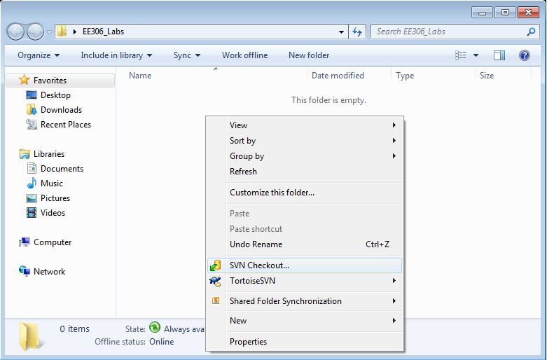
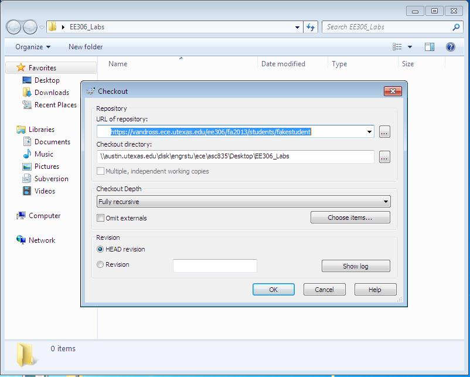
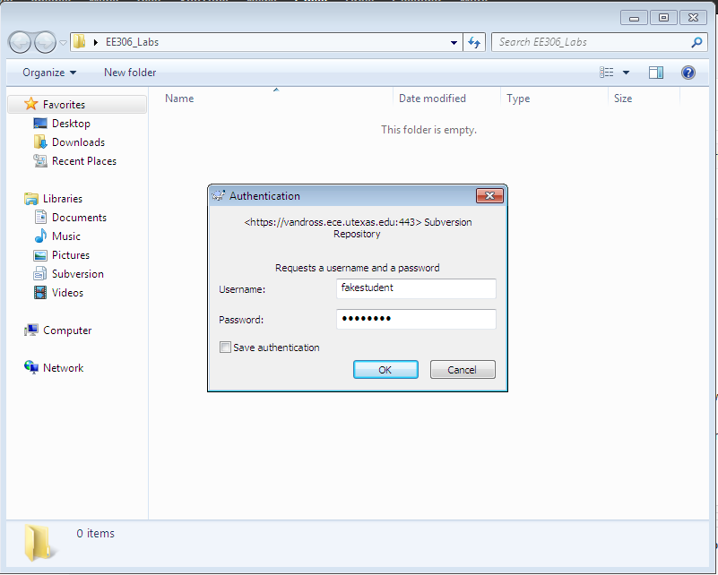
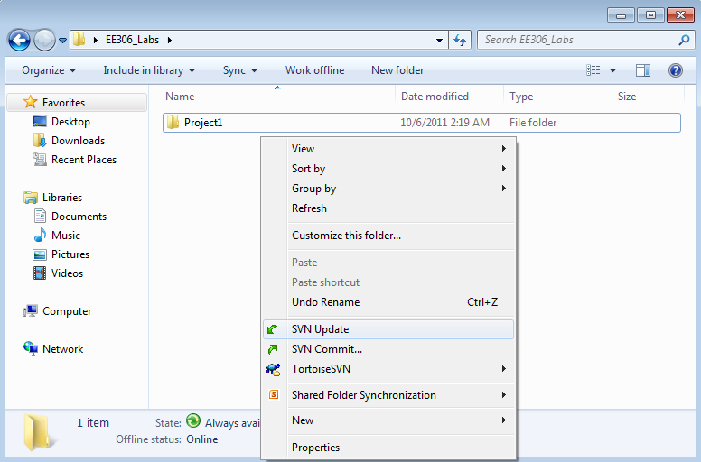
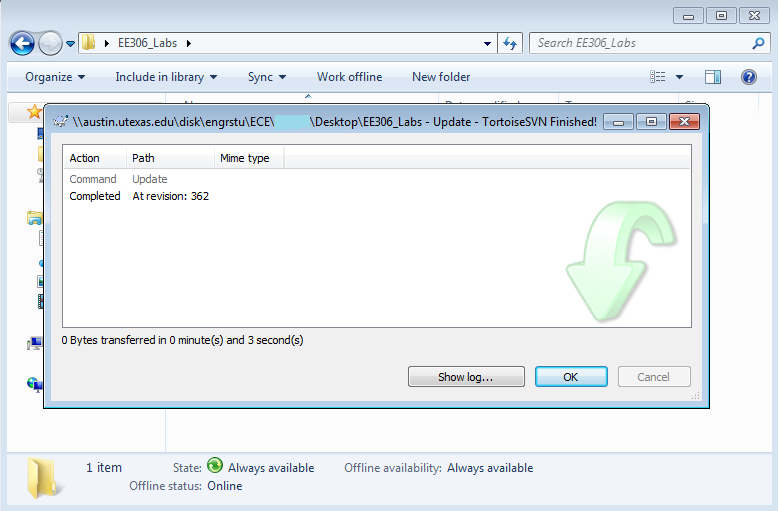
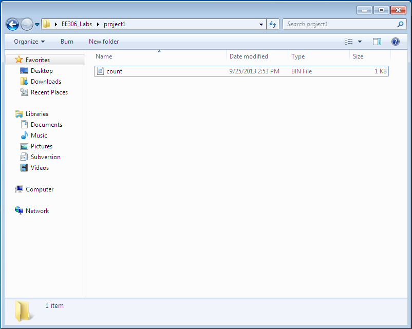
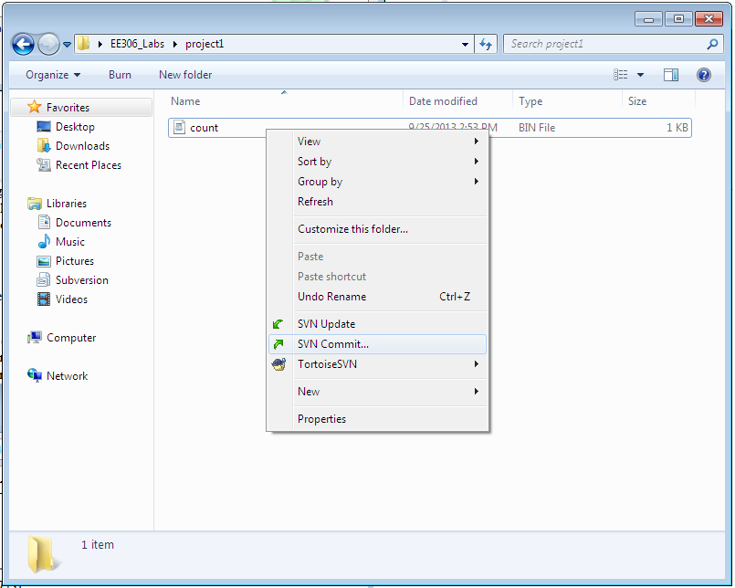
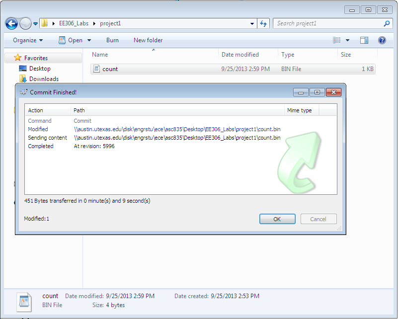
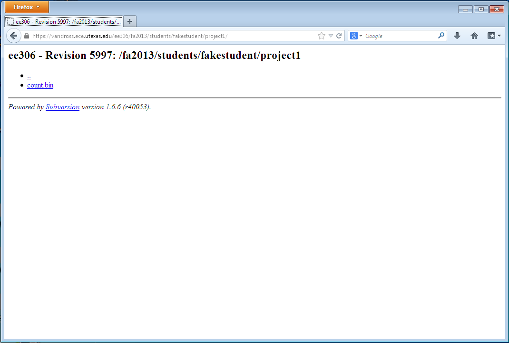
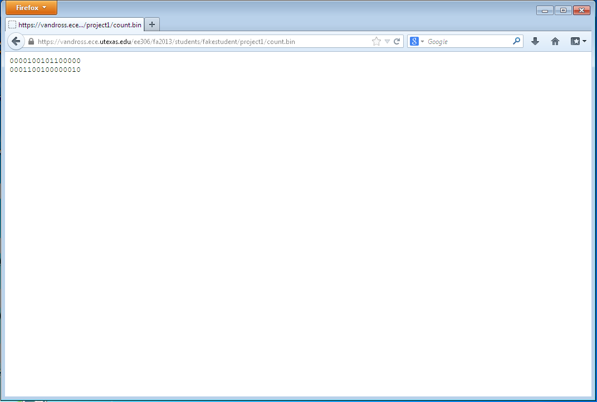

Program Submission Instructions
Fall 2013
We will not accept email submissions. If you email a TA or Professor Patt
your Programming Assignment, the TA/Professor Patt will delete your email
and ignore your submission. You will receive a zero on the Programming
Assignment. Learn how to submit your program early so this does not happen
to you.
You must ensure you name your programs exactly as described for each
Programming Assignment. Otherwise, you will receive a zero on the
Programming Assignment.
To submit your programs for this class, you will be using a version control
tool called Subversion, or SVN for short. TortoiseSVN is a tool for Windows
systems that allows you to submit your programs to the Subversion repository
where the instructors will be able to view and grade your submission.
There are two options for submission available to you. You can either download
and install TortoiseSVN on your Windows machine, or or you can use the Windows machines in ENS 507 (open Mon-Fri 9am to 9pm) and ENS 307 (open 24 hours a day), which have TortoiseSVN already installed for you.
There are four steps outlined below: installing TortoiseSVN, setting up your
submission directory, updating your submission directory, and submitting your
program. Installing TortoiseSVN (only necessary if using your own Windows
machine) only needs to be done once. Setting up your submission directory only
needs to be done once. Both updating your submission directory and submitting
your program need to be done for every programming assignment you
submit.
To collect your grade report for each lab, follow the "Updating Your
Submission Directory" step. Once grades are available, a result file will
appear in the appropriate Project directory (e.g., project1) when you follow
these steps.
Finally, if you encounter issues during submission, you may attempt the
following three steps in sequence:
- Backup your files/programs. You can do this by copying your
files/programs into another directory, which you should not
delete.
- Delete your entire submission directory
- Repeat the steps below beginning with setting up your submission
directory.
Remember: You are responsible for the security of your files. Do NOT allow
anyone to access your files! If someone cheats by accessing your files
because they were not properly secured, both parties will be found guilty of
cheating and suffer the same consequences.
Having problems submitting? Contact a TA in person during office hours.
Installing TortoiseSVN
- Navigate to http://tortoisesvn.net/downloads.html.
- Download the version of TortoiseSVN appropriate for your personal
computer by clicking on either "TortoiseSVN 32-Bit" or "TortoiseSVN 64-Bit".
Do not click on any other link on this page. Only use the green buttons
labeled "TortoiseSVN 32-Bit" or "TortoiseSVN 64-Bit". You can check
which version you need by checking your computer properties page (right
click on "Computer", select "Properties"). Under "System Type", if it says
"32-bit Operating System", you should download "TortoiseSVN 32-Bit". If it
says "64-bit Operating System", you should download "TortoiseSVN 64-Bit".
Ask a TA is you're not sure which one you should install.
- Run the installer file you downloaded in step 2.
- Click Next.
- Select "I accept the terms in the License Agreement".
- Click Next.
- Accept the default settings on this page by clicking Next.
- Click Install.
- If Windows asks for permission to install TortoiseSVN, click Yes.
- Wait for TortoiseSVN to finish installing, and click Finish.
- If TortoiseSVN asks you to restart your computer, click Yes (this will
immediately restart your computer. Save your work beforehand).
Setting Up Your Submission Directory
- For this step, you will need to know your submission username and
password. Your submission username is your UTEID (all lowercase). You
can find your password in BlackBoard. Check out the grades section of
BlackBoard for EE306, and look for your Program Submission Password. The
sample below uses "fakestudent" as the UTEID. Replace all instances of "fakestudent"
with your own UTEID in order to submit your program.
- Create a directory on the machine you are using where you can work on
and submit EE306 labs. For example, you may call it "EE306_Labs".
- Enter this directory and right click on empty white space. Click on the
option labeled "SVN Checkout...".

- In the "Checkout" window that pops up, enter the following text:
https://vandross.ece.utexas.edu/ee306/fa2013/students/< your_uteid >
Into the "URL of repository:" field. The figure below shows the link for the UT EID: "fakestudent". Replace the word "fakestudent" with your UT EID

- Click "OK", and wait for the "Authentication" window to pop up (this can
take a while). Enter your UTEID and password (this is not your UTEID
password! Check BlackBoard for your submission password) into the
window. Click the "Save authentication" box.
Note: The password that shows up on Blackboard has a "/0" appended to it.
These two characters are NOT a part of your password.
Do not include those when you type your password. Here is a screenshot to show what we mean.

- Click "OK". You should see an indicator that mentions the process is
"Completed. At Revision: ...". Click "OK" once this happens.

Updating Your Submission Directory
- Enter the directory you created in "Setting Up Your Submission
Directory". (e.g., EE306_Labs). Right click on empty white space. Click on
the option labeled "SVN Update".

- Wait for the message "Completed. At Revision: ...". Click "OK" once this
happens.

Submitting Your Program
- Enter your submission directory. (e.g. "EE306_Labs").
- Navigate to the appropriate project directory (e.g., "project1").
- You should see file(s) in the project directory with the appropriate
name for whichever programming assignment you are submitting (e.g.,
"count.bin"). These files will generally be empty. They may or may not
contain useful code to help you get started, depending on which programming
assignment you are working on.

- You have two options: you can delete these helper files, and copy your
files of the exact same name into this directory, or you may open
these files, and write your program into the given files. Be sure to save
the programs when you are done.
- In the project directory, right click on empty white space. Select "SVN
Commit...".

- A window labeled "Commit" should appear. Click "OK".

- You should see a message "Completed. At Revision: ...". Click "OK" once
this happens.

- Congratulations! You've submitted your program. A few more notes: you
can resubmit your program as many times as you want up until the deadline.
We will ignore any submissions you make beyond the deadline, so be sure to
finish your lab on time.
- Note: If you see folders called ".svn", do not modify/delete
them.
Verifying Your Submission
Make sure you perform the following additional steps to verify your submission.
- In your browser, navigate to:
https://vandross.ece.utexas.edu/ee306/fa2013/students/your_uteid
- Enter your submission username and password. This is not your UTEID
password! Remember, check BlackBoard for your submission
password. Note that the password on Blackboard has the characters "/0" appended to it. You need to remove those when you type in your password. The screenshot here shows what we mean.
- Click on the project directory you wish to verify submission for. Here,
you can see the latest files you have submitted.

- Click on the file link to see its contents.

- Try refreshing your browser if it appears that the file on the website
is not updating.
Note: If you are familiar with command-line based subversion tools, feel
free to use these at your own risk. We are not responsible if you fail to
correctly submit your program with these tools.
{kind=link}